What it is
Worum es geht
BomberMen-X is a real-time multiplayer Bomberman for 2–4 players sharing one grid arena.
BomberMen-X ist ein Echtzeit-Multiplayer-Bomberman für 2–4 Spieler in einer gemeinsamen Gitter-Arena.
- Move a tile at a time, drop bombs, blow up breakable walls for power-ups — be the last one standing.Feld für Feld bewegen, Bomben legen, zerstörbare Wände für Power-ups sprengen — als Letzter übrig bleiben.
- It runs as two programs: a server that owns the one true game and a desktop client that draws it.Es läuft als zwei Programme: ein Server, dem das echte Spiel gehört, und ein Desktop-Client, der es zeichnet.
- The server decides everything, so play stays fair and in sync.Der Server entscheidet alles, daher bleibt das Spiel fair und synchron.
- Empty seats are filled by non-random bots.Leere Plätze füllen nicht-zufällige Bots.
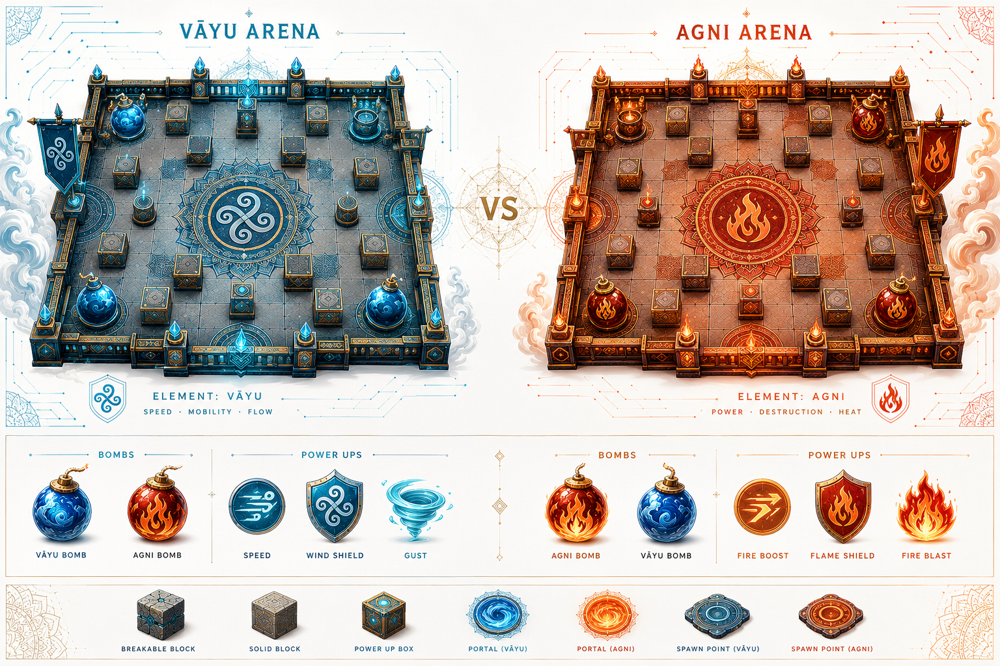
Architecture & style
Architektur & Stil
Documented with the arc42 template; the primary view is Component-and-Connector.
Dokumentiert mit der arc42-Vorlage; die primäre Sicht ist Component-and-Connector.
- Client-Server style — chosen over peer-to-peer (no trusted authority → cheating) and microservices (needless complexity).Client-Server-Stil — gewählt gegenüber Peer-to-Peer (keine vertrauenswürdige Instanz → Cheating) und Microservices (unnötige Komplexität).
- A publish-subscribe supporting style broadcasts game state to every client.Ein Publish-Subscribe-Stil verteilt den Spielzustand an jeden Client.
- Three Maven modules:
core(shared rules),server(the authority),client(the view) — over one WebSocket.Drei Maven-Module:core(Regeln),server(Instanz),client(Ansicht) — über einen WebSocket.
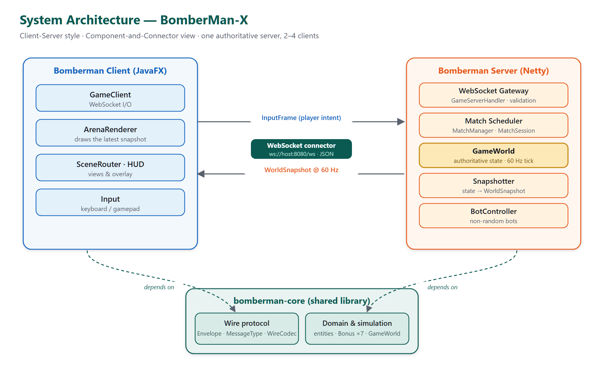
How a bomb works
Wie eine Bombe funktioniert
A single runtime path shows the whole authority model in action.
Ein einziger Laufzeitpfad zeigt das gesamte Autoritätsmodell in Aktion.
- The client sends only your key press — it never decides anything.Der Client sendet nur deine Taste — er entscheidet nichts.
- The server validates it, places the bomb and runs the fuse on its 60 Hz tick.Der Server prüft sie, legt die Bombe und zählt die Zündschnur im 60-Hz-Takt.
- On detonation it computes the cross blast, destroys breakables, reveals power-ups and eliminates players.Bei der Detonation berechnet er die Kreuz-Explosion, zerstört Wände, enthüllt Power-ups und eliminiert Spieler.
- Every client receives the full new state and simply draws it — fair and in sync.Jeder Client erhält den vollständigen neuen Zustand und zeichnet ihn nur — fair und synchron.
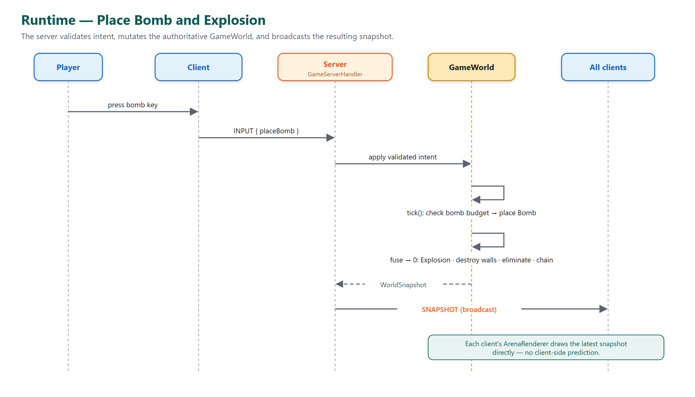
Domain model
Domänenmodell
A clean problem-space model — the concepts of the game, nothing technical.
Ein sauberes Problemraum-Modell — die Spielbegriffe, nichts Technisches.
- Player, Bomberman, Bomb, Explosion, Arena, Tile, Bonus, Match and Score with their associations.Player, Bomberman, Bomb, Explosion, Arena, Tile, Bonus, Match und Score mit ihren Beziehungen.
- No methods, no technical classes — a true problem-space domain model.Keine Methoden, keine technischen Klassen — ein echtes Problemraum-Domänenmodell.
- A comprehensive design model (with the runtime classes) lives in the full report.Ein umfassendes Entwurfsmodell (mit Laufzeitklassen) steht im vollständigen Bericht.
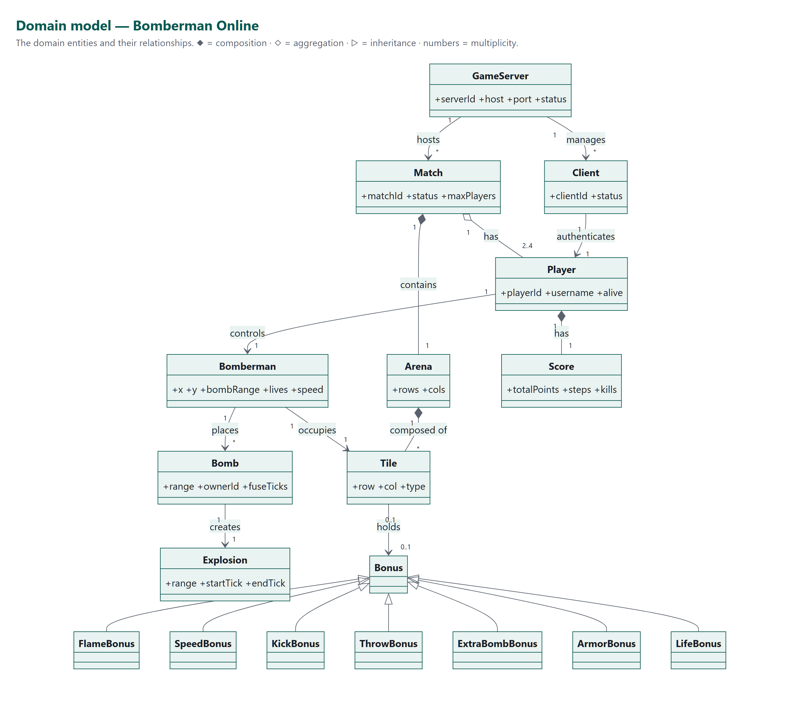
The bombers
Die Bomber
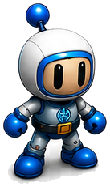
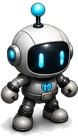
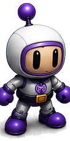
Requirements at a glance
Anforderungen auf einen Blick
Covered: core gameplay, server-side validation, non-random bots, 2–4 players and real-time synchronised play — exactly what the brief asks for.
Abgedeckt: Kern-Gameplay, serverseitige Validierung, nicht-zufällige Bots, 2–4 Spieler und echtzeit-synchrones Spiel — genau das, was die Spezifikation verlangt.
UI / UX walkthrough
UI-/UX-Rundgang
The four screens of a match — swipe through the lobby, the live arena, the ranking and the finish.
Die vier Bildschirme einer Runde — Lobby, Live-Arena, Rangliste und Abschluss.
Interactive prototype
Interaktiver Prototyp
A self-contained walkthrough — connect → lobby → play → ranking → finish — that runs entirely in the browser. No install, no server.
Ein eigenständiger Rundgang — Verbindung → Lobby → Spiel → Rangliste → Ende — der vollständig im Browser läuft. Keine Installation, kein Server.
More diagrams
Weitere Diagramme
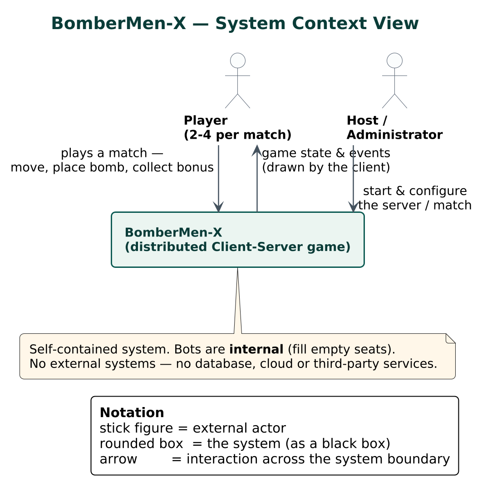
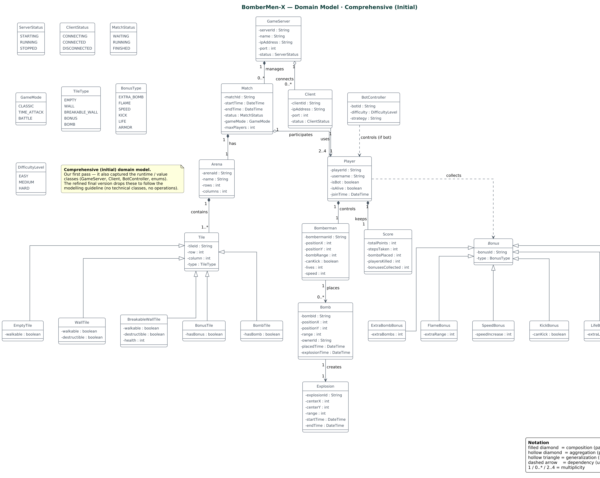
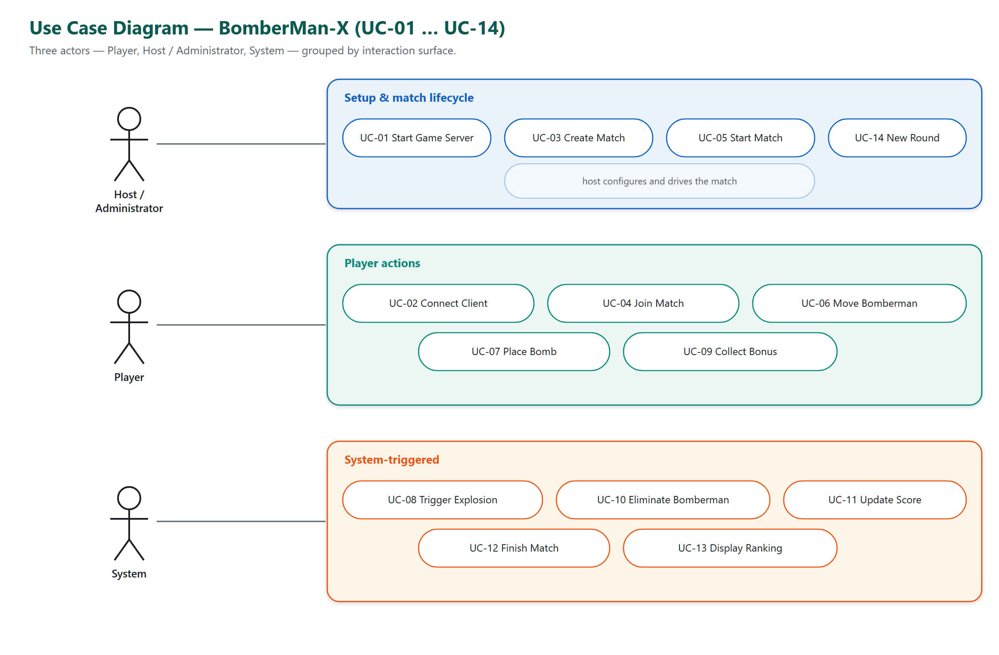
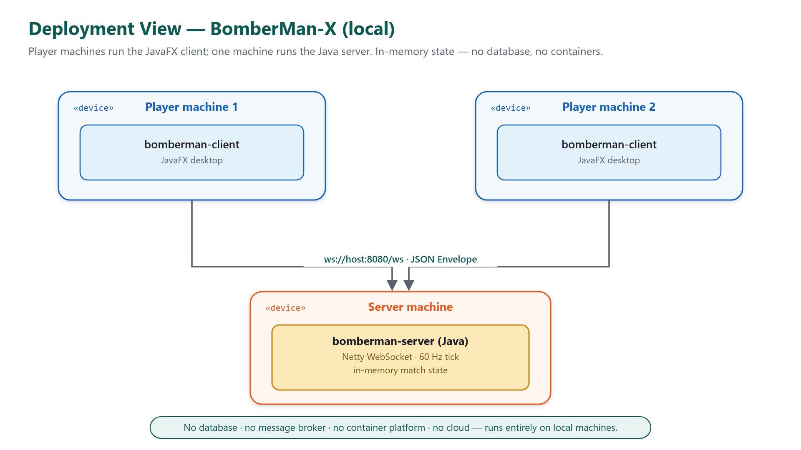
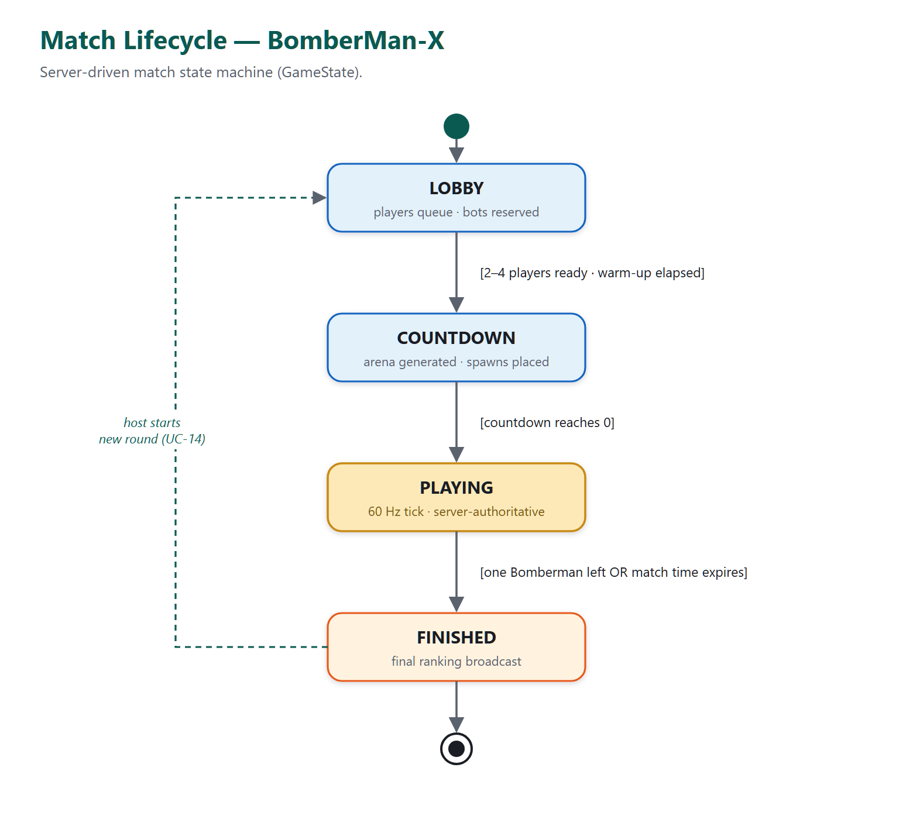
Plans & key decisions
Pläne & Entscheidungen
Descriptive plan — as built
Deskriptiver Plan — wie gebaut
- A desktop client and a server, joined by one WebSocket carrying JSON.Ein Desktop-Client und ein Server, verbunden über einen WebSocket mit JSON.
- The server owns the world: an authoritative 60 Hz tick; the client is a pure renderer.Der Server besitzt die Welt: ein autoritativer 60-Hz-Takt; der Client ist reiner Renderer.
- In memory, single node — no database, containers or cloud.Im Speicher, ein Knoten — keine Datenbank, Container oder Cloud.
- Verified: three modules build green with an automated test suite.Verifiziert: drei Module bauen grün mit automatisierten Tests.
Prescriptive plan — as intended
Präskriptiver Plan — wie vorgesehen
- Central discovery server with an in-client server browser.Zentraler Discovery-Server mit Server-Browser im Client.
- 30 s inactivity → 3 s forced-detonation rule.Regel: 30 s Inaktivität → 3 s erzwungene Detonation.
- Documented, cross-group interoperable protocol.Dokumentiertes, gruppenübergreifend interoperables Protokoll.
- Each reachable from today's design without a redesign.Jeweils ohne Redesign aus dem heutigen Entwurf erreichbar.
What we took away
Was wir mitgenommen haben
Architecture isn't a document you write afterwards — it's the decision record and the traceable thread you hold in your hand before and while you build.
Architektur ist kein Dokument, das man danach schreibt — es ist das Entscheidungsprotokoll und der nachvollziehbare rote Faden, den man vor und während des Bauens in der Hand hält.
- ADRs turned every choice into a stated reason and trade-off — so the design can be defended, not just shown.ADRs machten aus jeder Wahl einen begründeten Kompromiss — so lässt sich der Entwurf verteidigen, nicht nur zeigen.
- Traceability — brief → requirement → use case → ADR → component → class → test — is what every developer is expected to reason about; practising it is the real step from developer to architect.Nachvollziehbarkeit — Auftrag → Anforderung → Anwendungsfall → ADR → Komponente → Klasse → Test — ist das, worüber jeder Entwickler nachdenken soll; sie zu üben ist der echte Schritt vom Entwickler zum Architekten.
- Java proved the dependable, time-tested choice for architecture work like this — clear modules, strong tooling, no surprises.Java erwies sich als verlässliche, bewährte Wahl für solche Architekturarbeit — klare Module, starkes Tooling, keine Überraschungen.
The team
Das Team
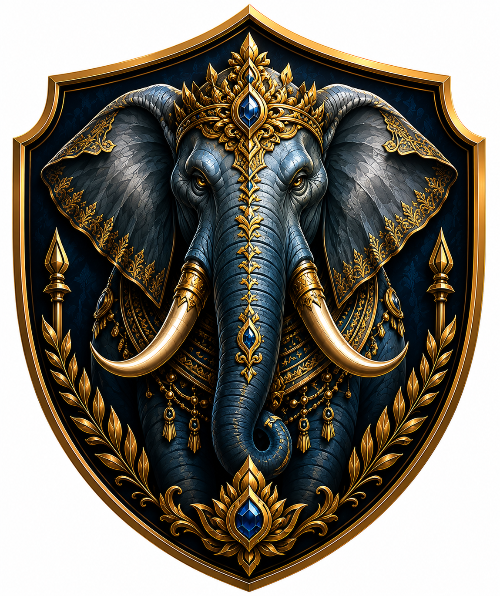
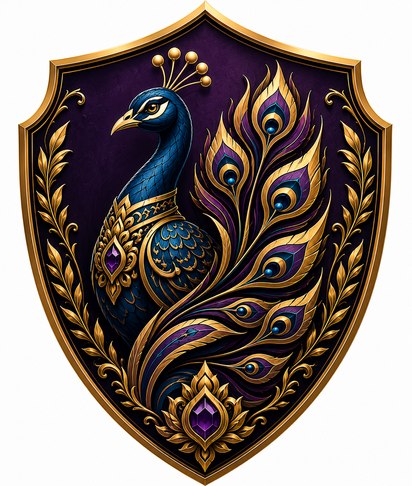